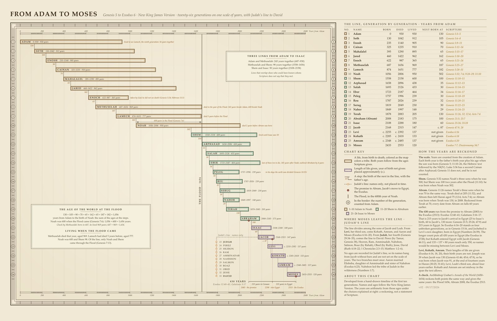

Adam to Moses Genealogy Timeline
From Adam to Moses · Genesis 5 to Exodus 6: twenty-six generations on one scale of years, with Judah’s line to David

From Adam to Moses, version 2. Sources: the New King James Version and Ussher’s Annals as a check. Click the chart to enlarge.Full size
The twenty-six generations from Adam to Moses on one scale of years. Each life is a bar from birth to death, reckoned from the ages Scripture gives, so you can see at a glance whose lives overlapped: Methuselah died in the year of the Flood, and Shem was still living when Isaac was fifty.
The chart marks the Flood in the year 1656 from Adam, the promise to Abram, Jacob’s move to Egypt and the Exodus, and sets Judah’s line to David beside the line to Moses. A panel shows how every year is reckoned and where the choices lie. Archbishop Ussher’s Annals of the World, used as a check, gives the same years.
Names and ages follow the New King James Version. The years are arithmetic from those ages: a reckoning, not a statement of Scripture.
Chart by View.Bible.
When
4004–1451 BC, as Archbishop Ussher reckoned the years: a reckoning from the ages Scripture gives, not a statement of Scripture (how the years are counted).
See it on the timeline →Downloads
The line, generation by generation (26)
Years from Adam, as the chart reckons them; c. marks a life whose length is given but not its year of birth.
| No. | Name | Born | Died | Lived | Next born at | Scripture |
|---|---|---|---|---|---|---|
| 1 | Adam | 0 | 930 | 930 | 130 | Genesis 5:3–5 |
| 2 | Seth | 130 | 1042 | 912 | 105 | Genesis 5:6–8 |
| 3 | Enosh | 235 | 1140 | 905 | 90 | Genesis 5:9–11 |
| 4 | Cainan | 325 | 1235 | 910 | 70 | Genesis 5:12–14 |
| 5 | Mahalalel | 395 | 1290 | 895 | 65 | Genesis 5:15–17 |
| 6 | Jared | 460 | 1422 | 962 | 162 | Genesis 5:18–20 |
| 7 | Enoch | 622 | 987 | 365 | 65 | Genesis 5:21–24 |
| 8 | Methuselah | 687 | 1656 | 969 | 187 | Genesis 5:25–27 |
| 9 | Lamech | 874 | 1651 | 777 | 182 | Genesis 5:28–31 |
| 10 | Noah | 1056 | 2006 | 950 | 502 | Genesis 5:32; 7:6; 9:28–29; 11:10 |
| 11 | Shem | 1558 | 2158 | 600 | 100 | Genesis 11:10–11 |
| 12 | Arphaxad | 1658 | 2096 | 438 | 35 | Genesis 11:12–13 |
| 13 | Salah | 1693 | 2126 | 433 | 30 | Genesis 11:14–15 |
| 14 | Eber | 1723 | 2187 | 464 | 34 | Genesis 11:16–17 |
| 15 | Peleg | 1757 | 1996 | 239 | 30 | Genesis 11:18–19 |
| 16 | Reu | 1787 | 2026 | 239 | 32 | Genesis 11:20–21 |
| 17 | Serug | 1819 | 2049 | 230 | 30 | Genesis 11:22–23 |
| 18 | Nahor | 1849 | 1997 | 148 | 29 | Genesis 11:24–25 |
| 19 | Terah | 1878 | 2083 | 205 | 130 | Genesis 11:26, 32; 12:4; Acts 7:4 |
| 20 | Abraham (Abram) | 2008 | 2183 | 175 | 100 | Genesis 21:5; 25:7 |
| 21 | Isaac | 2108 | 2288 | 180 | 60 | Genesis 25:26; 35:28 |
| 22 | Jacob | 2168 | 2315 | 147 | c. 87 | Genesis 47:9, 28 |
| 23 | Levi | c. 2255 | c. 2392 | 137 | Exodus 6:16 | |
| 24 | Kohath | c. 2285 | c. 2418 | 133 | Exodus 6:18 | |
| 25 | Amram | c. 2348 | c. 2485 | 137 | Exodus 6:20 | |
| 26 | Moses | 2433 | 2553 | 120 | Exodus 7:7; Deuteronomy 34:7 |
Where Moses leaves the line: Judah’s line
The line divides among the sons of Jacob and Leah. From Levi, her third son, come Kohath, Amram, and Aaron and Moses (Exodus 6:16–20). From Judah, her fourth (Genesis 29:34–35), comes the line to David: Perez (by Tamar, Genesis 38), Hezron, Ram, Amminadab, Nahshon, Salmon, Boaz (by Rahab), Obed (by Ruth), Jesse, David (Ruth 4:18–22; 1 Chronicles 2:3–15; Matthew 1:2–6). No ages are recorded for Judah’s line, so its names hang from Jacob without bars and are not set on the scale of years.
How the years are reckoned
Each birth year is the father’s birth year plus his age when the son was born (Genesis 5; 11:10–26). Shem was born when Noah was 502 (Genesis 5:32; 11:10), and Abram when Terah was 130 (Genesis 11:26, 32; 12:4; Acts 7:4). The 430 years run from the promise to Abram (2083) to the Exodus (2513): 215 years in Canaan and 215 in Egypt (Exodus 12:40–41; Galatians 3:16–17). Levi, Kohath and Amram have their lengths of life but not their years of birth, so they are placed approximately.
Sources
New King James Version
Names, spellings, ages and short quotations.
Scripture taken from the New King James Version®. Copyright © 1982 by Thomas Nelson. Used by permission. All rights reserved.
James Ussher, Annals of the World (1650–1654)
A check on the reckoning of the years. Public domain.
Every source the site uses: Sources.
How to cite
From View.Bible, From Adam to Moses (Genesis 5 – Exodus 6), version 2, https://view.bible/adam-to-moses-genealogy/, CC BY 4.0.